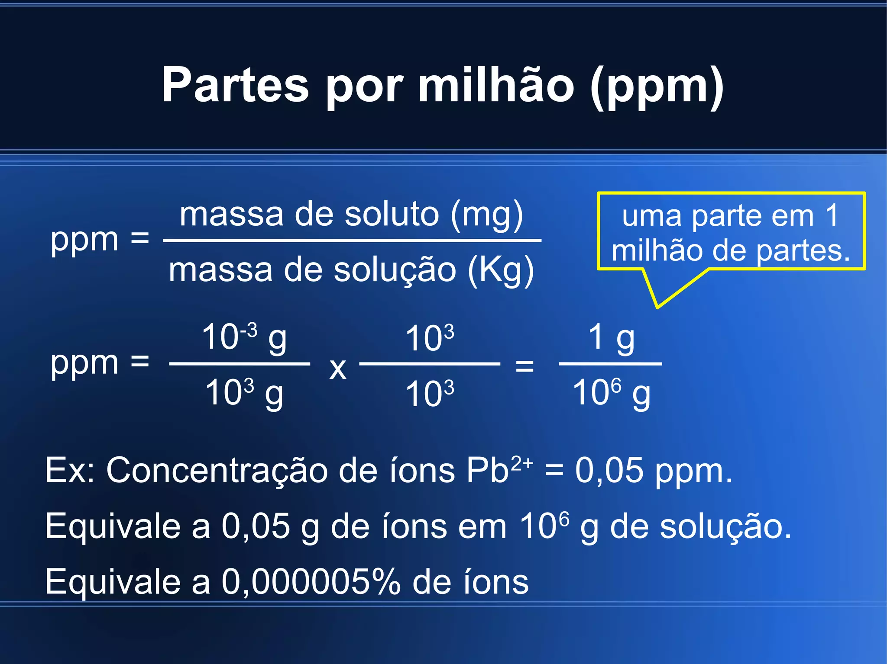
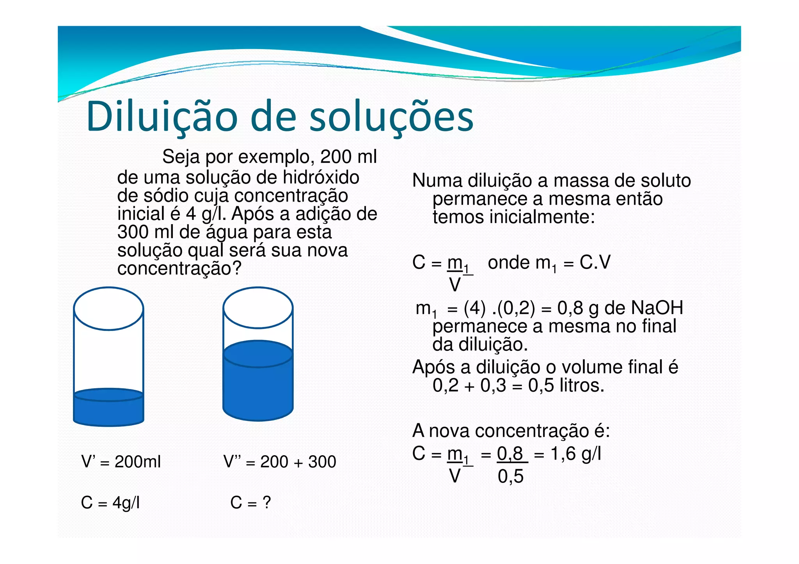
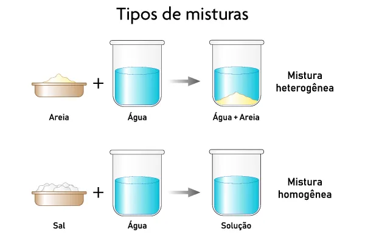

Playlist de Química


Parte por milhão (ppm)
Partes por Milhão ($\text{ppm}$) é a unidade de concentração usada para quantificar solutos em soluções extremamente diluídas. Significa uma parte do soluto por um milhão ($10^6$) de partes da solução total. É crucial para a Química Ambiental, pois permite expressar traços de contaminantes (como poluentes) de forma prática, evitando valores muito pequenos de porcentagem.
Diluicao das solucoes
A diluição de soluções é o processo de reduzir a concentração de uma solução através da simples adição de solvente (geralmente água). O princípio fundamental é que a quantidade de soluto permanece constante, mesmo que o volume total aumente. Isso se resume na fórmula $C_i \cdot V_i = C_f \cdot V_f$, sendo crucial para prepararmos soluções menos concentradas a partir de soluções-estoque.
Misturas
Uma mistura é a união física de duas ou mais substâncias puras, onde cada componente mantém suas identidades químicas. Elas são classificadas como homogêneas (uma única fase, como o ar) ou heterogêneas (duas ou mais fases visíveis, como água e areia). As misturas não possuem composição fixa e suas propriedades variam conforme a proporção dos componentes.
